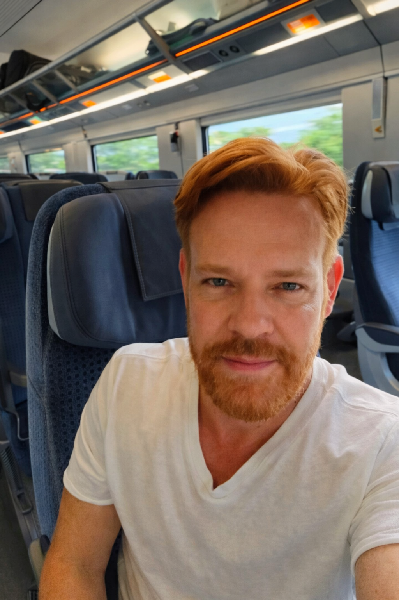
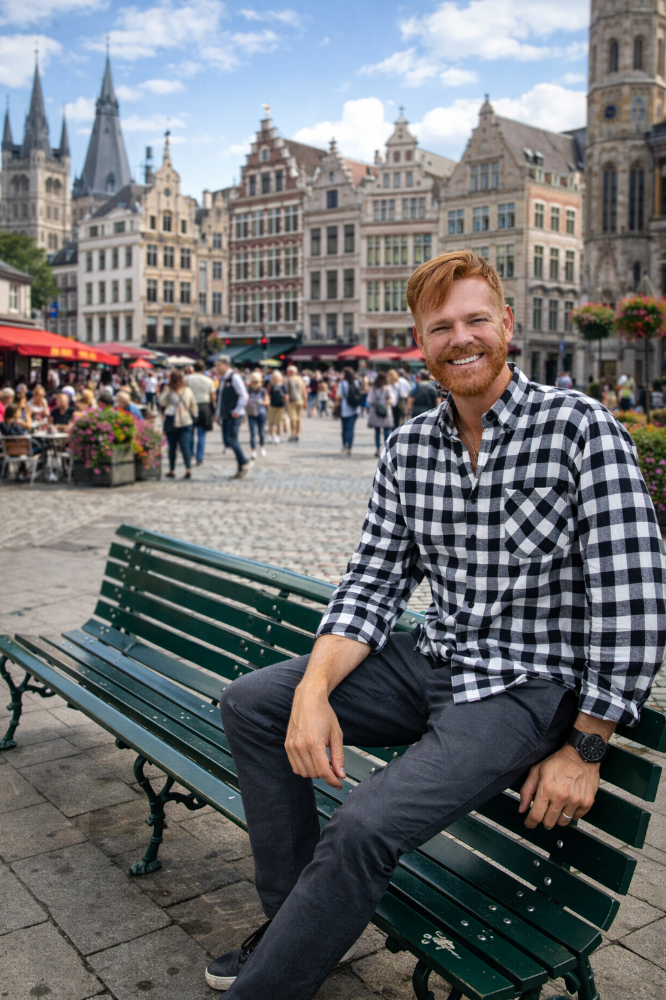
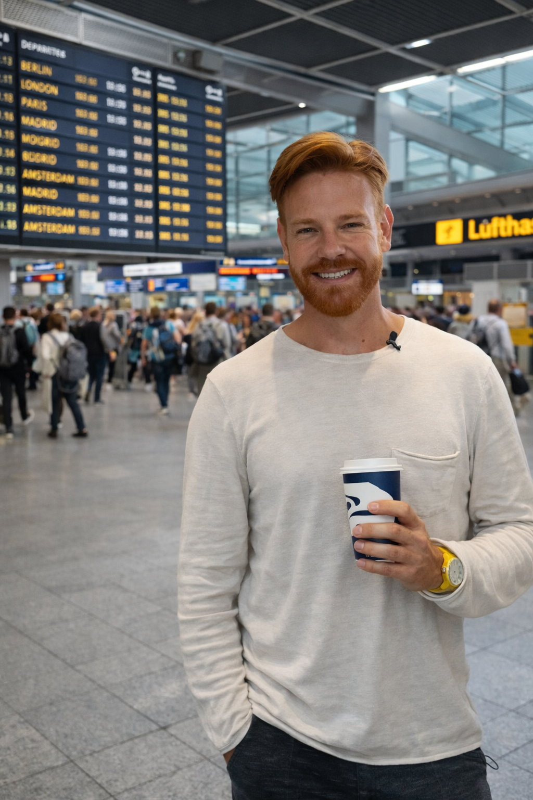

Portugal
Lisboa, Porto, Sintra, Douro, litoral e outros recortes para diferentes estilos de viagem.
A Europa reúne estilos de viagem muito diferentes: capitais clássicas, cidades históricas, roteiros de trem, litoral, montanhas, gastronomia e viagens urbanas. Aqui no Lipe Travel Show, esta página funciona como porta de entrada para comparar países, abrir regiões e também acessar guias mais práticos para transformar inspiração em roteiro e roteiro em compra.
Entre pelos países e hubs que já estão organizados no site para comparar melhor cidades, estilos de viagem e combinações de roteiro.
Lisboa, Porto, Sintra, Douro, litoral e outros recortes para diferentes estilos de viagem.
Grandes cidades, Andaluzia, litoral, ilhas e combinações para montar roteiros mais completos.
Paris e outros caminhos para pensar a França além do óbvio, com mais repertório de viagem.
Cidades clássicas, regiões icônicas e possibilidades de roteiro para diferentes ritmos de viagem.
Londres e outras bases para encaixar cultura, história e vida urbana com mais contexto.
Grandes cidades, história, mercados, castelos e rotas pelo país para ampliar o repertório.
Paisagens alpinas, trens, lagos e viagens mais contemplativas para quem quer outro ritmo.
Amsterdam e outros recortes que combinam cidade, design, arte e bate-voltas fáceis.
Ilhas, vilas brancas, mar azul, beach clubs, gastronomia e recortes que misturam sonho, verão e planejamento.
Estes hubs abrem blocos importantes do continente e ajudam a entrar por famílias de destinos já agrupadas no site.
Cidades históricas, castelos, arquitetura marcante e rotas menos óbvias para quem quer ampliar o olhar sobre o continente.
Design, qualidade de vida, paisagens, cidades organizadas e um ritmo de viagem mais calmo.
Grandes capitais, arte, história imperial e uma leitura urbana forte para quem quer aprofundar outro lado da Europa.
Abra estes destinos complementares e compare combinações mais interessantes dentro da Europa.
Arquitetura, história e atmosfera clássica de uma das cidades mais desejadas da região.
Termas, rio, cafés e elegância do leste europeu em um roteiro que costuma render muito.
Cidades históricas, memória e ótimas surpresas para quem quer ampliar o repertório de viagem.
Litoral, muralhas, ilhas e viagens de verão com outro ritmo dentro do continente.
Castelos, mosteiros, montanhas e rotas menos óbvias para quem quer sair do tradicional.
Use estes recortes para afinar o olhar antes de fechar país, cidade e combinação de roteiro.
Boa opção para quem quer começar com destinos mais clássicos e fáceis de combinar, como Portugal, Espanha, França ou Itália.
Boa para quem quer cidades grandes, museus, bairros icônicos, gastronomia e ritmo mais intenso.
Faz sentido para quem quer castelos, centros medievais, paisagens e rotas com mais atmosfera.
Ideal para quem prioriza montanhas, lagos, trens panorâmicos e viagens mais visuais.
Além dos destinos, a home da Europa agora também aponta para duas páginas-filha mais práticas: uma para estruturar sua Eurotrip e outra focada em como pesquisar melhor suas passagens para o continente.
Uma página prática para pensar blocos de viagem, combinações de países, deslocamentos, custos, reservas e experiências sem sair comprando tudo antes da hora.
Um guia direto para entender portas de entrada, hubs, datas, comparação de rotas e como pesquisar melhor seus voos antes de reservar.


Depois de escolher os destinos que fazem mais sentido para você, vale começar a comparar preços e organizar a viagem. Aqui no Lipe Travel Show, você também pode pesquisar e comprar voos, hotéis e outros serviços para montar seu roteiro com mais praticidade.

Ainda em dúvida sobre qual país ou cidade combina mais com a sua viagem? Explore também os outros conteúdos do site para comparar destinos, organizar prioridades e avançar para a reserva no momento certo.
Abra mais países, regiões e conteúdos editoriais para comparar melhor seu próximo roteiro.
Use a camada prática do site para organizar escolhas, prioridades e próximos passos da viagem.
Quando o roteiro estiver mais claro, avance para a etapa de comparação de voos, hotéis e reservas.